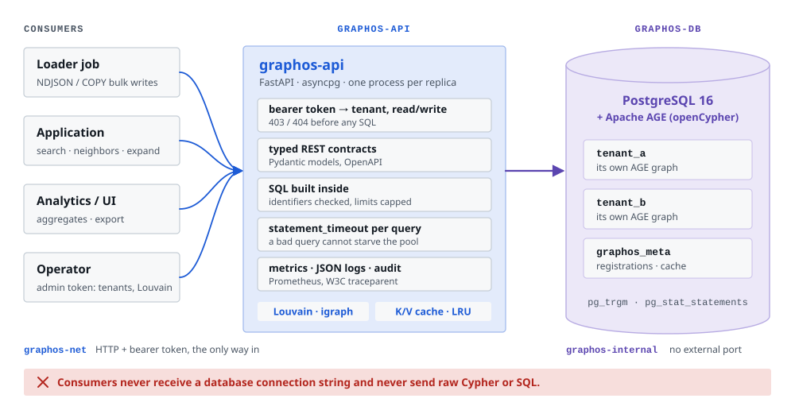
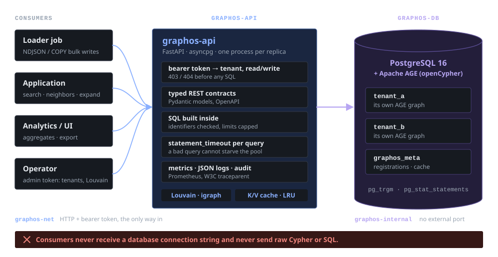
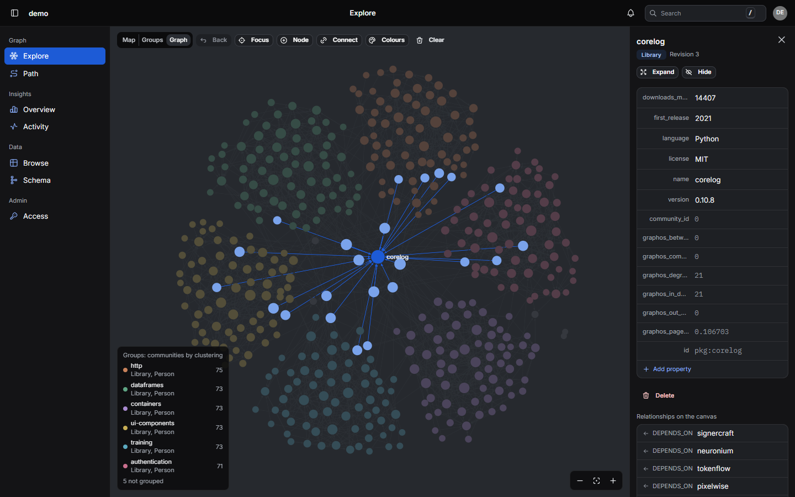
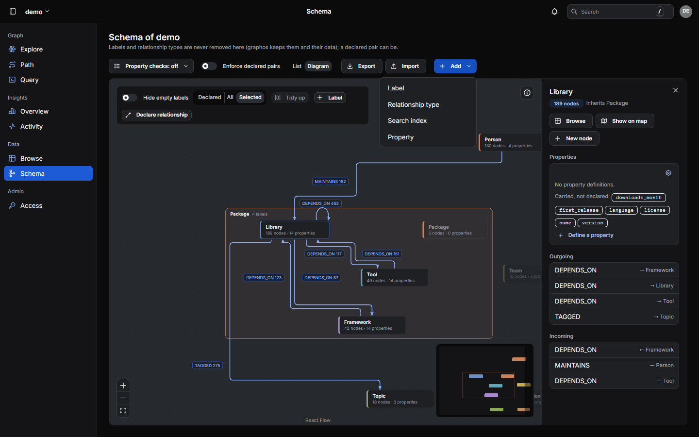
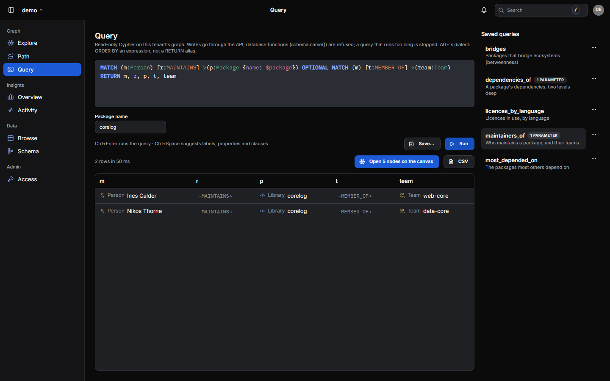
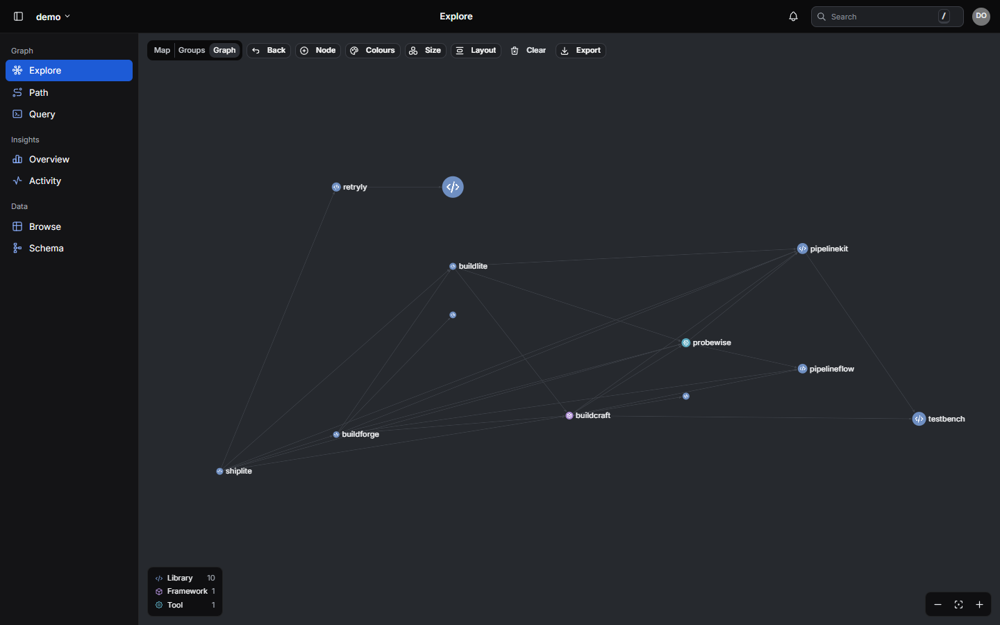
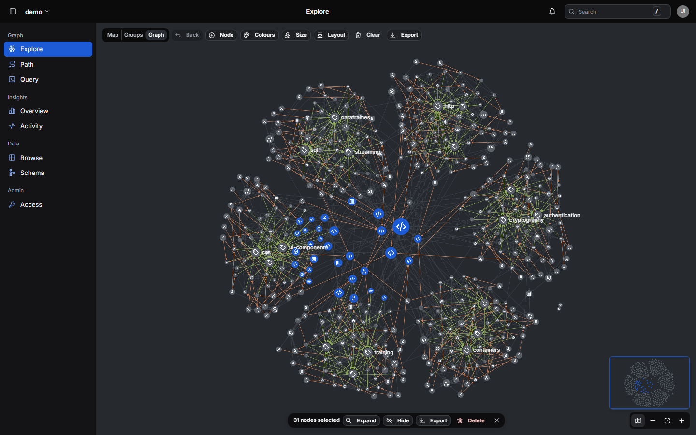
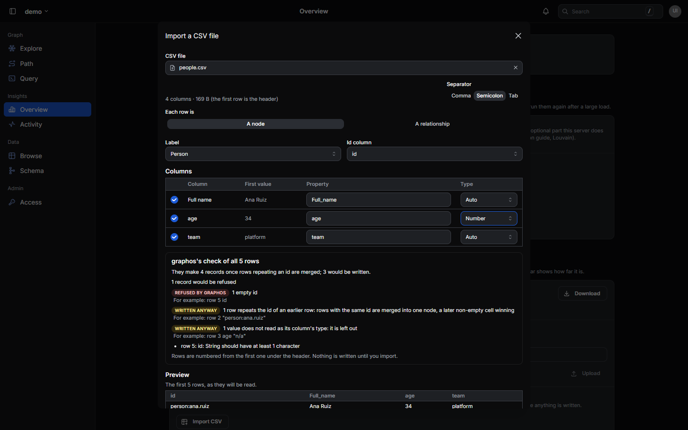

Open source · Apache-2.0 · version 0.14.6
graphos
A multi-tenant property-graph service: PostgreSQL + Apache AGE behind a typed HTTP API.
In 30 seconds
- The problem: Connected data turns up in most systems. Once several services need it, each one ends up holding database credentials, its own Cypher, and its own answers to bulk loading, indexing and isolation.
- The approach: One service owns the graph. Consumers call a typed REST API, and AI agents the same reads over MCP; graphos alone talks to PostgreSQL + Apache AGE on a private network.
- What it is not: Not a query passthrough for applications (Cypher is offered read-only, under graphos's checks), not a new database engine, and not tied to any domain: graphos ships no labels of its own.
- Licence: Apache 2.0, like the Apache AGE extension it is built on.
From many database clients to one graph service
![Left: three services each embed a database driver, a connection string and their own Cypher, and all reach one shared graph database, so credentials and query text spread, there is no tenant boundary, a slow query affects everyone and each team re-solves bulk load and indexing. Right: the same services call graphos over typed HTTP; graphos alone reaches PostgreSQL with Apache AGE on a private network, giving each consumer its own account and short-lived tokens, a graph per tenant with bounded, timed queries, and built-in bulk load, indexing and community detection.](images/problem-light.svg)
![Left: three services each embed a database driver, a connection string and their own Cypher, and all reach one shared graph database, so credentials and query text spread, there is no tenant boundary, a slow query affects everyone and each team re-solves bulk load and indexing. Right: the same services call graphos over typed HTTP; graphos alone reaches PostgreSQL with Apache AGE on a private network, giving each consumer its own account and short-lived tokens, a graph per tenant with bounded, timed queries, and built-in bulk load, indexing and community detection.](images/problem-dark.svg)
What graphos is made of
- Storage
- PostgreSQL 18 with Apache AGE 1.8; each tenant is its own AGE graph
- API
- Typed HTTP (FastAPI), JSON and NDJSON; the contract at
/openapi.json - Access
- Users and service accounts, 15-minute tokens, OpenID Connect sign-on, a level per tenant
- Algorithms
- Louvain and Leiden (optional extra), PageRank, betweenness, components, degree
- Clients
- An async, typed Python client; an optional web UI; plain HTTP
- Images
ghcr.io/pomentum/graphos-apiandgraphos-ui, amd64 and arm64- Licence
- Apache-2.0
- Latest
- 0.14.6
- Agents
- An MCP endpoint,
/mcp: 22 read tools on the API's tokens and grants
Build, explore, run
Build
Tenants and schema
Each tenant is its own AGE graph with its own labels; no built-in labels or property names; optional property rules, warn or strict; labels, relationship types and properties renamed in place or deprecated, with what replaces them (usage).
Fast, idempotent writes
Batches, NDJSON bulk and snapshot import as COPY-staged upserts, 37–156× faster than per-row Cypher MERGE in our measurements (usage, AGE notes).
Load a CSV file
Send the file itself; graphos maps its columns to properties, merges rows that repeat an id, checks every row (a dry run writes nothing) and writes them as bulk loads do (usage).
Edit in place, safely
Patch or delete one node or edge, or delete up to 1,000 nodes in one transaction; If-Match turns a concurrent edit into a 412 instead of a lost update (usage).
Composable reads
Search (substring or ranked indexes), neighbors, multi-hop expand, shortest paths, scans and subgraphs (usage).
Rule-derived edges
Declare a property-match rule once; edges:resolve writes the edges in SQL (usage).
Reconcile by difference
Send the whole set of a node's or a type's edges; graphos adds, changes and removes only the difference, in one transaction (usage).
Copy, back up and restore
A tenant's schema and data as files, restored exactly or loaded into plain AGE (usage, without graphos).
Python client
Async and typed; signs in and renews its token by itself (below).
Explore
Graph analytics
A map of every label and the edges between them (about a second on ten million edges), aggregates, top-K by degree (usage).
Graph algorithms
Communities with Louvain or Leiden (optional extra), PageRank, betweenness, components and degree, run beside the API and written onto the nodes; re-runs write only what changed (what each finds).
Cypher console
Read-only Cypher on one tenant, write clauses refused, with a timeout, a row cap and saved queries (usage).
AI agents (MCP)
/mcp serves graphos's reads to agents as tools and resources, with the caller's grants and a schema summary made for models; MCP clients sign people in themselves (agents guide).
Web UI (optional)
Explore, inspect and edit, work on many nodes at once, import a CSV file, query, extend the schema, follow changes live and export what is on screen (below).
Run
Safe by default
15-minute tokens for people and service accounts, single sign-on, a level per tenant, stored secrets sealed with a master key, a Host allowlist, statement timeouts, the database out of reach (installation, single sign-on).
Change feed
Every write recorded in its transaction; read after a cursor or follow live (usage).
Background jobs
Long operations answer 202 at once, then can be polled and cancelled (usage).
Operable
Prometheus metrics, JSON logs with traceparent, an audit log and per-user rate limiting (usage).
Bulk writes 37–156× faster than per-row Cypher MERGE
Every write goes through COPY-staged SQL upserts instead of Cypher, every label gets its indexes at registration, and the same graph reads faster on PostgreSQL 18 with AGE 1.8, which graphos now requires. Measured with the scripts in scripts/, by profiling queries and by timing requests against a running service: orders of magnitude, not guarantees.
| Measured | Before | graphos | Factor (log scale) | × |
|---|---|---|---|---|
Bulk edge writesper-row Cypher MERGE → COPY-staged INSERT … ON CONFLICT | 31 /s | 1,153–4,840 /s | 37–156 | |
| Substring search on a nameno index → the trigram index graphos creates | 1.2 s | 1.3 ms | ~920 | |
| Lookup by community idno index → the index graphos creates | 2.4 s | 0.5 ms | ~4,800 | |
| 12-read mix, 5 users, 360 requestsPostgreSQL 16 / AGE 1.6 → PostgreSQL 18 / AGE 1.8 | 57 s | 35 s | 1.6 | |
| Paths of up to 4 hops, median, 5 usersPostgreSQL 16 / AGE 1.6 → PostgreSQL 18 / AGE 1.8 | 1,233 ms | 529 ms | 2.3 | |
| Graph metrics re-run after 1 % more edgesevery moved score rewritten (0.13.2) → scores that moved under 1 % left as stored (0.14.0) | 40 s | 17 s | 2.4 | |
| Community re-run after 1 % more edgesLouvain from scratch, the default → Leiden from the stored communities, on request (0.14.0) | 103 s | 28 s | 3.7 |
The COPY figures come from scripts/bench_bulk_write.py; the per-row MERGE baseline was measured with an earlier graphos that still had a Cypher write path and can no longer be rerun. PostgreSQL 16 / AGE 1.6 was measured before graphos dropped it; a stack on it still moves to 18 by itself on docker compose up. The PostgreSQL 18 database was freshly restored and the 16 one carried about 3× dead space, which favours 18. Details: why every write is SQL, indexes created at registration, measured on PostgreSQL 18. A re-run is faster because it writes less: 19,153 nodes instead of 250,076 for the metrics, 5,083 instead of 190,911 for the communities, which keep 63 of their 63 ids against 1 of 62; Louvain stays the default (Louvain and Leiden compared).
docker compose upOne service owns the graph


![A call to recompute-communities, by a user with maintain on the tenant, streams edges out of PostgreSQL as integer ids with plain SQL, builds a weighted undirected igraph with its vertices in id order, runs Louvain, or Leiden starting from the communities the last Leiden run stored, in a separate process with a fixed seed, and matches each new cluster to its predecessor from the last run by Jaccard overlap of at least 0.5 so community ids stay stable. Results are written back with COPY and a single UPDATE, then the community id is denormalised onto every edge so scoped traversals use an index. Only one run per tenant happens at a time, a dry run previews the partition, and the response reports time per step and modularity.](images/communities-light.svg)
![A call to recompute-communities, by a user with maintain on the tenant, streams edges out of PostgreSQL as integer ids with plain SQL, builds a weighted undirected igraph with its vertices in id order, runs Louvain, or Leiden starting from the communities the last Leiden run stored, in a separate process with a fixed seed, and matches each new cluster to its predecessor from the last run by Jaccard overlap of at least 0.5 so community ids stay stable. Results are written back with COPY and a single UPDATE, then the community id is denormalised onto every edge so scoped traversals use an index. Only one run per tenant happens at a time, a dry run previews the partition, and the response reports time per step and modularity.](images/communities-dark.svg)
Explore, edit, query






Run it on your machine
Docker with Compose v2 and about 4 GB of memory for Docker.
git clone https://github.com/pomentum/graphos.git && cd graphos
# 1. Create local secrets: random database passwords
bash scripts/init-secrets.sh # or: pwsh scripts/init-secrets.ps1
# 2. Start graphos-db (Postgres 18 + AGE 1.8), graphos-api and the web UI (http://127.0.0.1:8081)
docker compose -f docker-compose.graphos.yml --profile ui up -d
# 3. Check it is up
curl -s http://127.0.0.1:8080/readyz
# 4. Sign in as graphos / graphos; the first password must be changed before anything else (uses jq)
TOKEN=$(curl -s -X POST http://127.0.0.1:8080/v1/auth/login -H "content-type: application/json" \
-d '{"user": "graphos", "password": "graphos"}' | jq -r .access_token)
ADMIN_TOKEN=$(curl -s -X POST http://127.0.0.1:8080/v1/me/password -H "Authorization: Bearer $TOKEN" \
-H "content-type: application/json" \
-d '{"current": "graphos", "new": "choose-your-own-password"}' | jq -r .access_token)
- Sign in to the UI at
http://127.0.0.1:8081asgraphos/graphosand choose a new password: the installation guide. - Register a tenant, write nodes and edges, read them back: the usage guide, or the Python client.
- Load the demo tenant to explore:
08_demo_ecosystem.py.
Read further
- Installation guide
- Installing, the first sign-in, users, single sign-on, production settings, upgrading
- Reading graphos's data without graphos
- The table layout, reading it with SQL or Cypher, taking it out, loading an export into plain AGE
- Upgrading the database
- Moving from PostgreSQL 16 / AGE 1.6 (no longer supported) to PostgreSQL 18 / AGE 1.8 with
docker compose up - Single sign-on
- Registering graphos at an OpenID Connect provider, a Keycloak example, troubleshooting
- Graph algorithms
- What the communities (Louvain, Leiden), PageRank, betweenness, components and degree find, what they are for, and how Louvain and Leiden differ
- Usage guide
- Practical integration patterns
- Connecting an agent (MCP)
- Where
/mcpis, getting a token, configuring a client, the tools and resources, security - Feature survey
- Every capability, briefly
- Concept
- Architecture, endpoint catalogue, capacity planning
- Apache AGE notes
- AGE pitfalls, indexing, Postgres tuning, measured numbers
- Web UI
- Running the UI, its views, how its code and text are organised